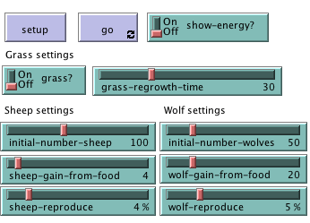
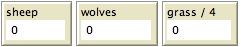

- 从文件菜单打开模型库。

- 从 Biology中选择 "Wolf Sheep Predation" 按钮按下 "Open"。
如果你已经读过简单模型: 聚会 部分,你应该简单了解了怎么与 NetLogo 模型交互。 这一部分更深入了解一些功能,这些功能在你探索模型库时会用到。
在整个教学过程中我们会请你做一些预测,预测修改模型后会出现什么后果。记住,后 果往往令你惊讶。我们认为这种惊讶非常令人激动,提供了特棒的学习机会。
有些人发现把这些教学材料打印出来放在手边,对学习很用帮助。打印出来后,你的计 算机屏幕上有更大的空间显示你要查看的 NetLogo 模型。
我们要打开一个模型实例详细探索。我们试试一个生物模型:狼吃羊,这是一个捕食者 -猎物种群模型。
- 从文件菜单打开模型库。
- 从 Biology中选择 "Wolf Sheep Predation" 按钮按下 "Open"。
界面标签页填满了许多按钮、开关、滑动条和监视器。这些界面元素使你可以与模型交 互。按钮是蓝色的，用它们设置、启动、停止模型。滑动条和开关是绿色的,它们用来修改模型配置。监视器和绘图是浅褐色的,它们用来显示数据。
如果你想让窗口大一些,让所有元素都能容易的看到,你可以使用窗口顶部的 zoom 菜单。
当你第一次打开模型时,你会看到视图是空的(全黑)。要让模型开始,你需要先进行初始设置。
- 按下 "setup" 按钮。
视图中出现什么?
- 按下 "go" 按钮开始仿真。
模型运行时,狼群和羊群发生什么?
- 按下quot;go" 按钮，停止模型。
按钮按下后模型就会通过执行一个动作做出响应。按钮分为“一次性”(once)和“永 久性”(forever)两种,可以通过按钮上的一个符号区分二者。永久性按钮的右下角有两个 箭头,就像这样:

一次性按钮没有箭头,就像这样:

一次性按钮执行动作一次然后停止。当动作完成后,按钮弹起。
永久性按钮不断的执行一个动作。当你想让动作停止时,再次按下按钮,它会完成当前动作,然后弹起。
大多数模型,包括狼吃羊模型,有一个一次性按钮称为“setup”和一个永久性按钮称 为“go”。许多模型还有一个一次性按钮称作“go once”或“step once”,它们很像 go 按钮,但区别在于它们只执行一步(时间步长)。使用这样的一次性按钮能让你更仔细的查 看模型的运行过程
停掉永久按钮是终止模型的正常方式。通过停止永久性按钮暂停模型运行,然后再次按 下按钮让模型继续,这非常安全。你也可以使用 Tools 菜单的“Halt”停止模型运行,但是 只有当模型因某种原因卡住时才应该这样做。使用“Halt”可能会让模型在某次行动的中间 停住,这可能导致模型乱套。
- 如果你愿意的话,试试狼吃羊模型的 "setup" 和 "go" 按钮。
如果使用同样的设置多次运行模型,结果会有不同吗?
速度滑动条控制模型运行速度,就是海龟的移动速度、瓦片颜色改变的速度,等等。
滑块左移使模型速度变慢,每个时间步之间的暂停时间更长,这样更容易观察发生了什 么。你甚至可以让模型运行的极慢,能看到每个海龟做什么。
滑块右移使模型速度变快。NetLogo 可能会跳帧,意思是说不再是每个时间步都进行视 图刷新。显示世界状态要耗费时间,因此少显示这些一般意味着运行更快。
注意如果滑块太靠右的话,视图更新太频繁,看起来却好像变慢了。实际并没有变慢, 你可以根据时钟显示确认这一点,只是视图更新频率降低了。
模型的配置给了你尝试不同场景或假设的机会。修改配置,运行模型,观察这些改变所 引起的反应,使你能更深入的了解所模拟的现象。开关和滑动条用来修改模型配置。
下面是狼吃羊模型中的开关和滑动条:

我们来试试这些行为的效果。
- 如果狼吃羊模型还没打开,现在打。
- 按下"setup" 和 "go" ,运行大约 100 时间步 (注意:图的右上有时钟读数。）
- 按下"go" 停止。
羊群怎么变化?
我们看看如果改变下面的设置的话,羊群怎么变化。
- 打开"grass?" 开关。
- 按下"setup" 和 "go" ,运行与上次差不多相同的时间。 
这个开关对模型有什么作用?结果和上次一样吗?
像按钮一样,开关也有与它相连的信息,这些信息采用开/关格式。开关发出特别的指 令,这些指令对模型并非必要,但为模型增加了附加的维度。打开"grass?"影响模型结果。 本次运行之前,草的增长率为常数。在掠食-食饵关系中这是不真实的,因此通过设置和打 开草的增长率,我们能够对三个因素建模:羊、狼和草。
另一种配置类型是滑动条。
滑动条是不同于开关的一种配置类型。开关有两个值:开或关。滑动条是一个可调的数 值范围。例如"initial-number-sheep"滑动条最小值为 0,最大值为 250。模型运行时可以 有 0 只羊,也可以有 250 只羊,或者中间的任何一个数值。试试看。当你从左到右移动滑块 时,滑动条右侧的数字变化,这就是当前值。
我们研究一下狼吃羊模型的滑动条。
- 阅读信息标签页中的说明,了解每个滑动条表示什么。
信息标签页提供了模型的指导和洞察。在这一页你会找到模型的解释,尝试建议以及其 他信息。你可以在运行模型前读它,也可以先试试模型,再返回来读它。
如果仿真开始时羊更多而狼更少,会怎么样?
- 关掉"grass?" 开关。
- 设置"initial-number-sheep" 滑动条为 100。
- 设置"initial-number-wolves" 滑动条为20。
- 按下 "setup" 和 "go"。
- 模型运行约 100 时间步。
尝试重复运行模型几次。
羊群数量发生了什么变化?
结果令你惊讶吗?调整哪些其他开关、滑动条能帮助羊群?
- 设置 "initial-number-sheep" 为 80 ,"initial-number-wolves" 为 50. (这与你第一次打 开模型时接近）
- 设置"sheep-reproduce" 到10%。
- 按下"setup"和 "go"。
- 让模型运行100个时间步。
狼群随着时间怎变化？
当你打开模型时,所有的滑动条和开关采用默认配置。如果你打开一个新模型或退出程 序,你的更改不会保存,除非你选择保存它们。
(注意:除了滑动条和开关,一些模型还有第三类配置元素,选择器(Chooser)。但本 模型没有。)
建模的一个目的是对那些难以在实验室中进行研究的问题收集数据。NetLogo 主要有两 个显示数据的方式:绘图和监视器。
狼吃羊中的图有三条线:羊、狼和草/4(草除以 4 的原因是为了别使图形太高)。这些 线显示了随着时间推进模型中发生了什么。要想知道每条线代表什么,在图形窗口的右上角 单击”Pens”,打开画笔图例。一个关键字说明了每条线是什么。在本例中就是种群数量。
当图快被充满时,水平轴增加,以前的数据被压缩只占一部分空间,更多的空间用来绘制将来的图形。
如果你想保存图上数据以备查看,或在另一个程序里进行分析,使用 File 菜单的 "Export Plot"。这些数据就被保存,数据格式可以被电子表格,如 Excel,或数据库程序识 别。也可以通过 Ctr+单击(Mac)或右击(Windows)弹出快捷菜单,然后选择"Export..."。
监视器是模型显示信息的另一种方法。下面是狼吃羊模型中的监视器:

监视器"time-ticks"告诉我们仿真时间。其他的监视器告诉我们狼、羊、草的数量。(记住,草的数量除以 4,为了别使图形太高)
当模型运行时监视器中的数值不断更新,而图形能显示模型整个运行过程中的数据。
如果观察界面标签页,会看到沿工具条上边缘有一条控件。这些控件改变视图的不同方面。
试试这些控件的效果。
- 按下 "setup" 和 "go" 启动。
- 模型运行时,将速度滑动条向左移动
发生了什么？
如果模型运行的太快,你可以使用它看清细节。
- 移动速度滑动条到中间。
- 尝试将速度移动条移到右边。
- 现在试一试勾选或者不勾选"view updates"复选框。
发生了什么？
如果你不耐烦,想让模型运行的更快,可以快进也可以关闭视图更新。快进(速度滑动 条右移)关闭视图更新,因此模型运行的更快,这是因为更新视图需要时间。
当视图更新完全关闭后,模型继续在后台运行,绘图和监视器也一直在更新。如果你想看看在发生什么,你需要重新勾选视图更新选项。当视图更新关闭后,多数模型运行速度更快。
视图的尺寸由 5 个设置共同决定:最小 X、最大 X,最小 Y、最大 Y 和瓦片尺寸。现在 让我们看看当我们改变狼吃羊模型视图的尺寸时发生什么。
有更多的关于世界和视图的设置,因为工具条面积有限,没有放上。"Settings..."按 钮可以让你获得其他设置。
- 按下工具条上的"Settings..." 按钮
会打开一个对话框,其中包括所有视图设置:
当前的 max-pxcor, min-pxcor, max-pycor, min-pycor 和 Patch size 是多少?
- 按下 "cancel" 按钮取消所做的改变。
- 将鼠标指针靠近视图,但不要进入视图窗口。
注意到鼠标指针变成了十字型
- 按着鼠标按钮在视图上拖动。
现在视图被选中,看到视图被灰框环绕,你可以确知这一点。
- 拖动黑色方块型“手柄”。手柄在视图的边上和角上。
- 在界面标签页的白色背景的任何地方单击,反选视图。
- 再次按下"Settings..." 按钮,看看设置。
哪些数字改变了?
哪些数字没有改变?
NetLogo 世界是由“瓦片”构成的二维网格,瓦片是网格中的一个方格。
在狼吃羊模型中,当"grass?"开关打开时瓦片很容易看到,因为一些瓦片是绿色的,一 些是褐色的。
可以把瓦片想象成地板上铺的方形瓷砖。默认情况下房子正中的一片瓷砖标记为(0,0), 意味着如果我们在水平和垂直方向画等分线,交叉点这在此处。这样我们就有了一个在房间中定位对象的坐标系统:

瓷砖(0,0)与房间最右边之间有多少瓷砖?
瓷砖(0,0)与房间最左边之间有多少瓷砖?
在 NetLogo 中,从右到左的瓷砖数称为世界宽度(world-width)。从顶到低的瓷砖数称为世界高度(world-height)。这些数字由顶、低、左、右边界(top, bottom, left and right)来定义。


在这些图中,max-pxcor 是 3 , min-pxcor 是 -3, max-pycor 是 2 ,min-pycor 是 -2.
当你改变瓦片大小时,瓦片(瓷砖)的数量不变,只是屏幕上瓦片的大小变化了。
让我们看看改变世界的最小、最大坐标的效果。
使用仍在打开的 Settings 对话框, 改变 max-pxcor 为 30,max-pycor 为 10。注意min-pxcor 和 min-pycor 也变了,这是因为默认原点 (0,0)在世界的中心。
视图的形状发生了什么变化?
- 按下 "setup" 按钮。
现在可以看到你创建的新瓦片。
- 再次按下"Settings..." 按钮。
- 将瓦片大小设为 20,按下"OK"。
视图的大小发生了什么变化? 它的形状变了吗?
编辑视图也可以让你改变其他设置,包括标签字体大小\视图是否使用形状(shape)。 随便试试这些设置吧。
当你探索完狼吃羊模型后,你可能想花点时间探索一下模型库中的其他模型。
模型库包括五部分: Sample Models, Perspective Demos, Curricular Models, Code Examples, HubNet Computer Activities。
Sample Models 部分是分科目组织的,目前有 210 多个模型。我们一直在增加模型,因此过段时间后能看到新加的模型。
有些文件夹下包含"(unverified)"子文件夹。这些模型是完整、可用的,但模型的内容、精度、代码质量等仍在评审之中。
这些模型是西北大学 CCL 开发的在学校使用的课程。有些模型在 Sample Models 中也有, 有些没有。看看信息标签页,了解更多的信息。
这是 NetLogo 特别功能的一些简单演示。当你以后扩展现存模型或新建模型时很有用。 例如,你想在模型中增加直方图,可以看看"Histogram Example",看看怎么做。
这一部分包括教室中使用的参与式仿真。要了解HubNet的更多信息,参见HubNet Guide。
如果想在更深的层次上探索模型,教学 #2: 命令 将引导你了解 NetLogo 建模语言。
在教学 #3: 例程 中,你学习怎样替换现有模型,以及如何构建你自己的模型。